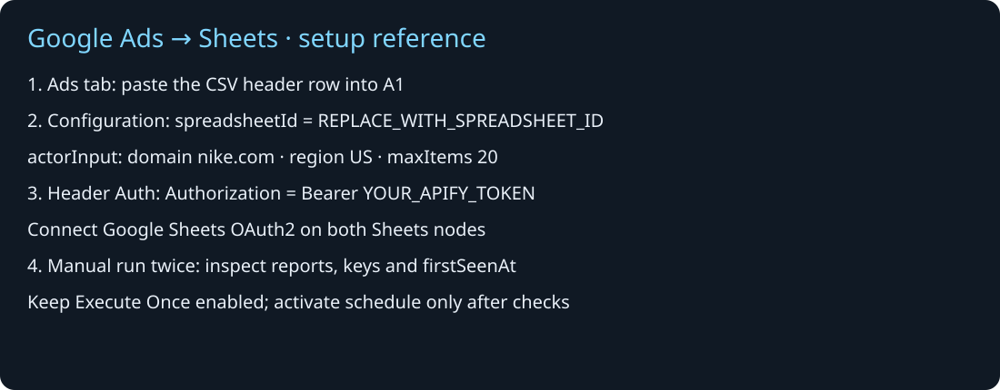

Track competitor Google ads in Google Sheets with n8n
By DataSmithLab · Published 11 October 2026
A spreadsheet is useful when you want to inspect a competitor's ads over time, share creative examples with a team or maintain a repeatable research log. This guide connects the DataSmithLab Google Ads Transparency Scraper to Google Sheets using an importable n8n workflow.
The starter collects a bounded snapshot, saves stable advertiser/ad identifiers and updates existing rows. It does not promise a complete competitor inventory. An ad first observed by your workflow may have been published much earlier.
Download workflow and headers · Open the Apify scraper
1. Prepare a private Ads tab
Create a Google spreadsheet and add a tab named Ads. Paste the exact header row from ads-sheet-headers.csv into row 1. Keep existing tabs separate and keep the spreadsheet private.
The workflow matches on key, a combination of the input scope, advertiser ID and ad ID. Do not rename the headers or change the matching column during setup.
2. Import the workflow and choose a small snapshot
Import google-ads-to-sheets.n8n.json into n8n. Open Configuration, an Edit Fields node. In spreadsheetId, enter the text between /d/ and /edit in your spreadsheet URL. Edit the actorInput object for one lowercase competitor domain and a region.
{
"domains": ["nike.com"],
"region": "US",
"resultType": "ads",
"includeAdContent": true,
"includeDetails": false,
"onlyNewAds": false,
"maxAdsPerTarget": 20,
"maxItems": 20
}Start with 20 ads. Keep Actor-side tracking off: this starter uses saved Sheets keys to track what has already been observed. Filter changes create a new scope and baseline. Use separate workflows and sheets for different competitors.

3. Connect Apify and Google credentials
Create an n8n Header Auth credential with header name Authorization and value Bearer YOUR_APIFY_TOKEN. Select that credential on Start Actor, Get run, Get HEALTH, Get TARGETS and Get ads. Keep the real token in n8n's credential manager, never in node code, Sheets or a public export.
Select a Google Sheets OAuth2 credential on Read saved ads and Save ads. n8n Cloud offers managed Google sign-in. Self-hosted users need custom OAuth setup; the official guide explains project creation, API enablement, consent and redirect configuration. Use the official Google OAuth2 setup instructions rather than copying somebody else's client secrets.
For self-hosted Google Sheets, follow the guide's Sheets and Drive API requirements. Copy the redirect URL shown by your own n8n credential exactly. In Testing mode, add the Google account as a test user. Account and OAuth setup time varies; this guide makes no three-minute setup promise.
4. Verify the first run, then repeat
Run Manual start. The workflow reads existing rows, launches one Actor, waits for completion and validates HEALTH, TARGETS and dataset counts before writing. Keep Execute Once enabled on Start Actor; otherwise saved rows can each trigger a separate launch.
- Confirm the Actor succeeds and the workflow reaches Run summary.
- Inspect HEALTH and TARGETS, and check baseline rows in the Ads tab.
- Run again sequentially. Repeated IDs should update the same keys and preserve
firstSeenAt. - New unseen IDs may legitimately increase the saved total. They are marked
logged, not verified newly published.
Live local tests on 11 October 2026 verified fresh scraping and actual scheduled delivery on n8n 2.26.4. Final Sheets read-back found 34 unique saved keys and zero duplicates. These sample results do not establish complete coverage or future reliability. A later clean-import test also passed, but used simulated external services and did not measure a novice's full setup time.
5. Schedule only after validation
The template's schedule is 09:00 UTC. Change it for your needs and activate only after your setup passes. Self-hosted n8n and its computer/server must stay running. Avoid overlapping manual and scheduled executions: the Sheets writes are not transactional and concurrent runs are not supported.
Costs, errors and coverage limits
The starter sends a $0.10 maximum Actor run charge setting, with 256 MB memory and a 600-second Actor timeout. This is not a total service-cost guarantee. Check current Store pricing and your hosting costs before scheduling. A run producing zero records can still incur applicable start or usage costs.
Missing reports, target failures, enrichment errors, charge-limit truncation and count mismatches stop the workflow. If credentials fail, fix access before retrying. If Google reports a redirect mismatch, compare the registered redirect URL with n8n's value. Inspect an existing Actor run before launching another after a timeout or concurrent-run error.
Twenty observed ads are a sample. Increasing limits can reveal older unseen IDs. Missing image-rendered copy may reflect source availability. Ads absent from a later snapshot remain in the Sheet; absence does not prove that an ad ended.
Frequently asked questions
Does this use the Google Ads campaign-management API?
The workflow calls the DataSmithLab Actor through the Apify API. It does not connect to your private Google Ads account or manage campaigns.
Do I need Slack?
No. This package logs records to Google Sheets and sends no notifications.
Is the template approved by n8n?
This is a DataSmithLab GitHub starter. A submission or review is not an approval; no approved-directory status is claimed here.
Open the first-run checklist or try the Actor. Share only redacted errors when requesting support.